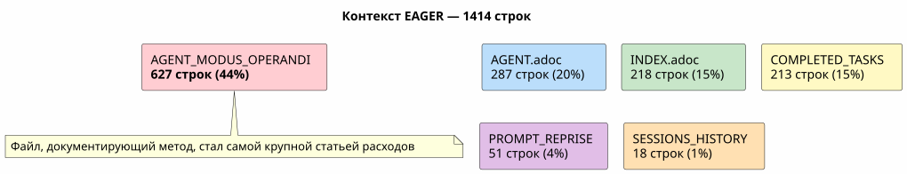
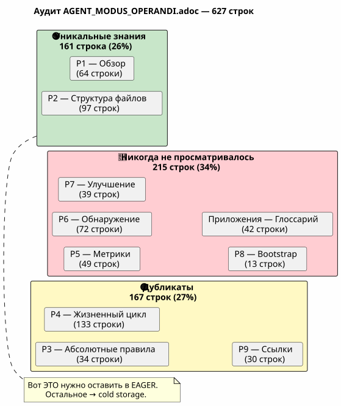
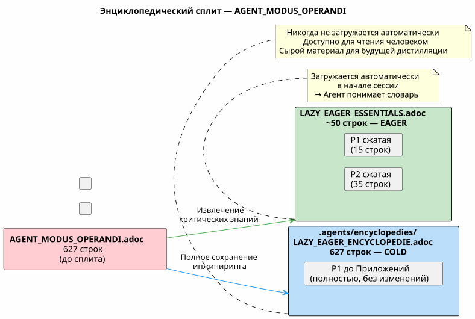
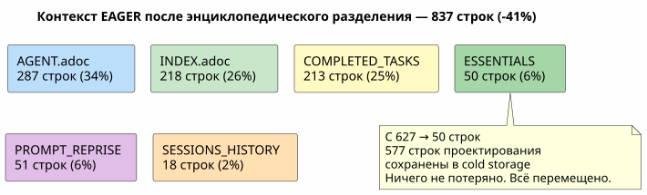
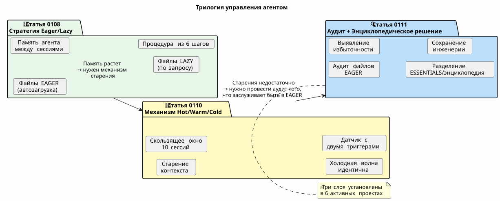
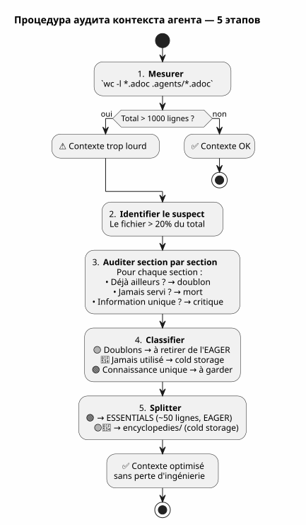
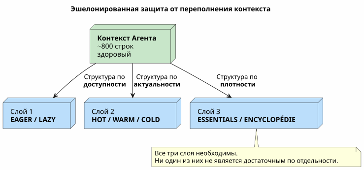

Контекстный аудит агента: когда ваше собственное управление становится проблемой — и как это исправить, ничего не теряя
Опубликовано 27 April 2026
- Сцена: сессия 051, что-то не так
- Аудит: разбирать 627 строк
- Страх потерять инженерию
- Решение: энциклопедичный split
- Содержание файла ESSENTIALS
- Результат: -50% контекста EAGER
- Почему папка называется `encyclopedies/
- Логическое продолжение серии
- Что бы я сделал иначе
- Руководство по аудиту вашего собственного контекста
- Живое управление
- Ссылки
Вы провели недели, создавая безупречную систему управления агентом. Eager/Lazy, процедура завершения сеанса, ротационные резервные копии. Система работает. И вот однажды агент стал медленным. Ответы стали размытыми. Вы измеряете: 1414 строк загружено автоматически. И худшее в том, что виноват не код, ни бэклог, ни архивы сессий. Виноват файл, документирующий ваш метод.
- тик
-
[]
Сцена: сессия 051, что-то не так
30 апреля 2026 г., 16:00. Я в разгаре сессии по`magic-stick`, мой проект сборки live-ISO Linux. Агент Opencode автоматически загрузил мои файлы Eager как обычно —AGENT.adoc, PROMPT_REPRISE.adoc, .agents/INDEX.adoc. Всё нормально.
Однако ответы получаются слабыми. Агент тратит на две секунды больше на рассуждения. Он забывает деталь, которую видел всего три сообщения назад. Это не сбой, не ошибка — это медленное ухудшение, такое, что его не замечаешь сразу.
Я уже переживал это в сессии 048, когда обнаружил, что файлы управления весят в сумме 5200 строк. Затем я концептуализировал механизм Hot/Warm/Cold со скользящим окном из 10 сессий, одинаковыми холодными волнами, датчиком с двумя триггерами. Проблема был решён. Теоретически.
Но мы находимся в сессии 051. Ротация бэкапа прошла успешно — файлы EAGER изменились с 2087 до 500 строк. Однако контекст остаётся тяжёлым. Что-то ускользает от меня.
Я открываю терминал и ввожу:
wc -l AGENT.adoc AGENT_MODUS_OPERANDI.adoc PROMPT_REPRISE.adoc \
.agents/INDEX.adoc .agents/SESSIONS_HISTORY.adoc \
.agents/archives/COMPLETED_TASKS_ARCHIVE_2026-04.adoc 287 AGENT.adoc
627 AGENT_MODUS_OPERANDI.adoc
51 PROMPT_REPRISE.adoc
218 .agents/INDEX.adoc
18 .agents/SESSIONS_HISTORY.adoc
213 .agents/archives/COMPLETED_TASKS_ARCHIVE_2026-04.adoc
1414 total1414 строк. Резервное копирование хорошо обрезало в INDEX, SESSIONS_HISTORY и COMPLETED_TASKS — они чисты. Но в комнате есть слон, которого я не заметил:627 строкв одном файле.AGENT_MODUS_OPERANDI.adoc.
Этот файл — тот, что я написал на сессии 1, чтобы задокументировать стратегию Eager/Lazy. Это руководство по методу. И он стал, сам по себе, 44% контекста EAGER.

Ирония полна. Файл, предназначенный для экономии контекста, стал основным потребителем контекста. Это как если бы руководство по эксплуатации вашей машины весило больше, чем двигатель.
Аудит: разбирать 627 строк
Я решаю провести аудит раздел за разделом. Не для удаления — для понимать того, что заслуживает находиться в EAGER и что могло бы существовать в другом месте без потери знаний.
Вот точная структура`AGENT_MODUS_OPERANDI.adoc`и что я там нахожу:
Раздел |
строки |
Содержание |
Уже присутствует в… |
P1 — Обзор |
64 |
Проблема решена, основные принципы, аналогия приборная панель vs руководство |
— |
P2 — Структура файлов |
97 |
Иерархия, политика загрузки, когда что загружать |
— |
P3 — Абсолютные правила |
34 |
Git запрещён, разрушительные команды запрещены, секреты запрещены |
|
P4 — Цикл жизни сессии |
133 |
Шаблон открытия, правила работы, 6 этапов завершения сессии, контрольный список |
|
P5 — Метрики и пороги |
49 |
Идеальная сессия (15-30 мин, 1-3 файлов), предупреждающие знаки |
— |
P6 — Типы сессий |
72 |
Таблица обнаружения, формат предложения, исключения |
— |
P7 — Непрерывное улучшение |
39 |
Метрики отслеживания, еженедельный обзор |
— |
P8 — Чеклист запуска |
13 |
Bootstrap новый проект |
— |
P9 — Ссылки |
30 |
файлы-справочники, внешние ресурсы |
|
Приложения A+B |
42 |
Глоссарий, история версий |
— |
Вердикт не подлежит обжалованию:
-
Полные дубликаты(167 строк) : P3, P4, P9 — всё уже находится в`AGENT.adoc` ou
INDEX.adoc, часто слово за словом -
Никогда не консультировались на практике(215 строк) : P5, P6, P7, P8, Приложения — метауправление, которое никогда не использовалось ни в одной сессии
-
Уникальное знание(161 строк) : P1 и P2 — словарь LAZY/EAGER, аналогия, политика загрузки
на 627 строках382 — это шум. Эти 382 строки загружаются при каждом начале сессии, потребляются агентом, размывая его внимание даже до того, как я скажу привет.

Эта схема — ключ ко всему. Дубликаты (жёлтый) — это чистый шум — агент читает их дважды, в двух разных файлах. Никогда не просматриваемый (красный) — это мёртвая документация — написана тщательно, никогда не используется. Только зелёный содержит знания, которые агент не может найти нигде ещё.
Страх потерять инженерию
На этом этапе у меня перед глазами доказательство: мне нужно уменьшить`AGENT_MODUS_OPERANDI.adoc`. Но я колеблюсь.
Этот файл я написал вручную. Каждый раздел — результат урока, извлечённого из реальной сессии. Часть P3 возникла из`rm -rf`случайный на`bakery-plugin`что мне обошёлся в реальные токены Firebase. Часть P4 — результат пятнадцати сессий, в которых я забывал архивировать и терял нить. Процедура из шести шагов не взята из книги — она возникла из боли.
Удалить эти разделы означало бы выбросить историю моей собственной инженерии. Уроки, которые их создали, сессии, во время которых я их открыл, ошибки, которых я больше никогда не хочу повторять. Это не текст — это кристаллизованный опыт.
Вот где я формулирую принцип, который будет руководить решением:
_ Никогда не удаляй. Всегда перемещай.Знание не должно исчезать из проекта. Оно просто должно не загружаться автоматически, когда оно не нужно. _
Решение: энциклопедичный split
Модель, которую я предлагаю, проста и вдохновлена тем, как росла Википедия: когда статья становится слишком длинной, мы не делим её — мы создаём подробную статью и оставляем резюме в основной статье.
для`AGENT_MODUS_OPERANDI.adoc`, это дает :
-
Извлечь161 строк уникальных знаний (P1 + P2) в новом файле`LAZY_EAGER_ESSENTIALS.adoc`— сжат до ~50 строк, строго EAGER
-
Переименовать
AGENT_MODUS_OPERANDI.adocen.agents/encyclopedies/LAZY_EAGER_ENCYCLOPEDIE.adoc— исходный файл из 627 строк, сохранённый целиком, в cold storage -
Никогда не заряжатьфайл энциклопедии автоматически — он здесь для человека, для будущей дистилляции, для агента, которого мы вызовем через шесть месяцев с лучшей моделью

Имя`encyclopedies/`Не безделица. Энциклопедия — это не архивное досье — это организованная коллекция знаний, доступная для чтения, но не переносная. Не читают энциклопедию Universalis в метро. Её хранят в библиотеке и к ней обращаются, когда возникает конкретный вопрос.
Это именно роль этого каталога: холодная справочная библиотека, структурированная и исчерпывающая — которую агент не трогает автоматически.
Содержание файла ESSENTIALS
Вот как конкретно выглядит новый файл`LAZY_EAGER_ESSENTIALS.adoc`, извлечённый и уплотнённый из P1 и P2 :
= Stratégie LAZY/EAGER — Principes Essentiels
[abstract]
Ce fichier définit la stratégie de gestion du contexte agent.
Chargé automatiquement (EAGER) en début de session.
== Principes
|===
| EAGER | LAZY
| Tableau de bord | Manuel du propriétaire
| Chargé automatiquement | Chargé sur demande
| <= 100 lignes, <= 10k tokens | Illimité, détaillé
| Règles absolues, mission courante | Archives, historique, références
|===
== Politique de Chargement
|===
| Fichier | Type | Quand charger
| PROMPT_REPRISE.adoc | EAGER | Début session (auto)
| *_ESSENTIALS.adoc | EAGER | Début session si EPIC active
| .agents/INDEX.adoc | EAGER | Début session (auto)
| *_REFERENCE.adoc | LAZY | Sur besoin (détails architecture)
| .agents/sessions/N-*.adoc | LAZY | Sur demande (détails session)
| .agents/encyclopedies/*.adoc | COLD | Jamais auto (humain seulement)
|===
== Comment l'Agent Sait Quoi Charger
Début session → PROMPT_REPRISE + INDEX + ESSENTIALS actifs.
Besoin de détails → charger les *_REFERENCE et sessions/ en LAZY.
Connaissance froide → encyclopedies/, jamais automatique.Пятьдесят строк. Это всё, что нужно агенту, чтобы понять механику. Всё остальное — история уроков, подробные аналогии, пошаговые процедуры, приложения — находится в энциклопедии.
И самое важное:ничего не было удалено. 627 инженерных строк всё ещё здесь, в`.agents/encyclopedies/LAZY_EAGER_ENCYCLOPEDIE.adoc`. Они просто расположены в библиотеке, а не на рабочем столе.
Результат: -50% контекста EAGER
Перед разделением :
287 AGENT.adoc
627 AGENT_MODUS_OPERANDI.adoc
51 PROMPT_REPRISE.adoc
218 .agents/INDEX.adoc
18 .agents/SESSIONS_HISTORY.adoc
213 .agents/archives/COMPLETED_TASKS_ARCHIVE_2026-04.adoc
1414 totalПосле разделения:
287 AGENT.adoc
50 LAZY_EAGER_ESSENTIALS.adoc ← remplace 627 lignes
51 PROMPT_REPRISE.adoc
218 .agents/INDEX.adoc
18 .agents/SESSIONS_HISTORY.adoc
213 .agents/archives/COMPLETED_TASKS_ARCHIVE_2026-04.adoc
837 total ← -41%
Самый большой потребитель (AGENT_MODUS_OPERANDI, 627 строк) был заменён файлом из 50 строк. Выгода немедленна: освобождено 577 строк контекста. Агент дышит.
И в`.agents/encyclopedies/`, Исходный файл из 627 строк ждёт. Цельный. Со всеми её разделами — включая те, которые являются дубликатами, включая те, которые никогда не использовались. Потому что однажды лучшая модель или человек-датасайентист захочет пересечь эти углы, эти принятые избыточности, эти извлечённые уроки. И тогда исходный материал будет там.
Почему папка называется `encyclopedies/
Выбор имени не косметичен. Он кодирует философию механизма.
Одна архив (archives/) содержит исторические данные, организованные хронологически — как ежемесячные COMPLETED_TASKS. Резервная копия backup (backup/) — это снимок с меткой времени — резервная копия прошлого состояния.
Энциклопедия — это другое. Это собрание тематических знаний, структурированное по темам, исчерпывающее, но нелинейное. Энциклопедию не читают с начала до конца. В неё погружаются, чтобы ответить на конкретный вопрос.
Это именно контракт этого дела :
Папка |
Роль |
Доступ |
Гранулярность |
|
Исторические данные (выполненные задачи за месяц) |
ЛЕНИВЫЙ, структурированный |
Хронологический |
|
Холодные Snapshots (волны из 10 сессий) |
COLD, полная копия |
Хронологический |
|
Исчерпывающие тематические знания (методология, паттерны) |
Холодный, никогда не сам |
Тема |
Это различие избавляет от хаоса. Каждый файл знает, где он должен находиться, исходя из того, что он содержит, а не из того, когда он был создан.
Логическое продолжение серии
Если вы прочитали первые две статьи, вот как три части соединяются:

-
0108Отвечает на: «Как дать памяти агенту между двумя сеансами?
-
0110отвечает: « Как предотвратить, чтобы эта память задушила агента?
-
0111отвечает на : « А если проблема не в размере архивов, а в том, что мы выбрали поместить в EAGER?
Первая статья построила структуру. Вторая добавила механизм старения. Третья проверяет содержание — и обнаруживает, что методология сама по себе стала проблемой.
Что бы я сделал иначе
Оглядываясь назад, я вижу ошибку в первоначальной концепции.`AGENT_MODUS_OPERANDI.adoc`Был создан как единый документ — манифест. Это был правильный подход для формализации мысли. Но после формализации мысли документ следовало сразу разделить: главное в EAGER, исчерпывающее в cold.
Я не сделал этого, потому что гордился документом. 627 строк чистой инженерии, написанных вручную, каждый раздел — результат урока сессии. Это была моя работа. И, как любой автор, мне было трудно её разрезать.
Урок :Это не потому, что документ хороший, что он должен быть загружен автоматически. Качество содержания не имеет никакого отношения к его актуальности для непосредственного контекста агента.
Сегодня правило простое: любой документ более 100 строк в контексте EAGER является подозреваемым. Он заслуживает аудита. Не осуждения — аудита. И вопрос никогда не «надо ли его удалять?», а «надо ли его загружать при каждой сессии?».
Руководство по аудиту вашего собственного контекста
Если вы прочитали первые две статьи и настроили свою собственную политику Eager/Lazy, вот процедура аудита из пяти шагов :
-
Измерять:`wc -l`на всех ваших файлах EAGER. Общее количество должно быть меньше 1000 строк.
-
Определить самый большой: файл, вес которого превышает 20% от общего, является главным подозреваемым.
-
Аудировать раздел за разделом: для каждого раздела спросите себя: « Эта информация уже где-то есть ? Агент уже читал её в другом файле ? Она использовалась в последних 5 сессиях ?
-
Классификатор: дубликат, никогда не использован, уникальное знание.
-
Разделить или перенести: что является уникальным и критичным → ESSENTIALS сжатый. Всё остальное →
encyclopedies/.

Эта процедура занимает 15 минут. На проекте из 50 сессий она экономит сотни токенов на будущую сессию. ROI немедлен.
Живое управление
Чему научила меня эта серия из трёх статей, так это то, что управление агентом не является готовым продуктом. Этоживой организм. Она растёт вместе с проектом. Она подвержена болезням роста. Ей требуются регулярные осмотры.
Сессия 048 показала, что архивы раздуваются. Сессия 051 показала, что сама методология раздувается. Сессия 060, вероятно, покажет что‑то другое. Это нормально. Это здорово. Управление, которое никогда не пересматривает себя, — мертвое управление.
Три механизма, внедрённые — Eager/Lazy, Hot/Warm/Cold, разделённый энциклопедический — образуют систему защиты в глубину от насыщения контекста. Ни один из них по отдельности не достаточен. Вместе они дополняют друг друга :
-
Жадный/Ленивыйструктурирует информацию par disponibilité
-
Горячий/Теплый/Холодныйструктурируй информацию по свежести
-
Энциклопедический аудитструктурируй информацию по плотности

С этими тремя слоями контекст агента на`magic-stick`снизилось с 2087 строк (до любой оптимизации) до примерно 800 строк — сокращение в 2,6 раза. Не потеряв ни одной строки документации, ни одного архива сеанса, ни одного извлечённого урока.
Все здесь. Просто лучше упорядочено.
Ссылки
-
Статья 0108 — стратегия Eager/Lazy:Управление агентом ИИ с использованием AsciiDoc
-
Статья 0110 — Механизм Hot/Warm/Cold :скользящее окно и холодная волна
-
Мой сайт: https://cheroliv.com
-
Проект`magic-stick`: https://github.com/cheroliv/magic-stick
Знание не должно исчезать. Оно просто не должно загружаться, когда оно не необходимо.